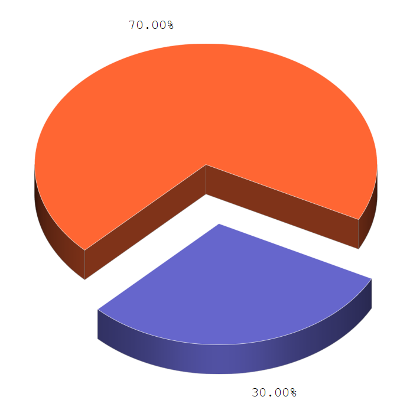

Los pronósticos se hacen colectando tantos datos como sea posible acerca del estado de la atmósfera
(particularmente temperatura, presión atmosférica, vientos, humedad y precipitaciones) y usando
conocidos procesos atmosféricos (a través de la meteorología) para determinar los patrones futuros
atmosféricos.
se usara bootstrap tres como ejemplo con la posibilidad de cambiarlo en el informe_05
esta tabla esta diseñada mediante html, donde se le implementaron los datos manualmente, pero en su
version final sacara los datos de una base de datos
| MESES | TEMPERATURA MAXIMA | #DIAS QUE LLOVIO |
|---|---|---|
| Julio | 27 grados | 13 dias |
| Agosto | 26 grados | 23 dias |
| Septiembre | 24 grados | 16 dias |
tabla probabilidad
Informacion Basica